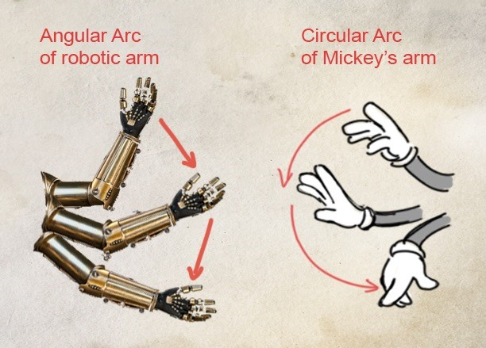

Arcs
The visual path of an object or action is called an “arc”. This could be the projectile of a bouncing ball, the path of a moving arm, and even the movements of mouth corners during a dialogue scene.
The arc is one of the most important tools to make movements realistic and pleasing to the eye. Due to the moving object’s inertia, its path should be smooth unless it’s being interrupted by an external force (e.g. impact). A smooth arc, like a dancer’s movement, is always eye pleasing. On the other hand, an unintended broken arc can reduce the believability of the movement.
Arcs are usually circular. Circular arc makes the movement organic. On the other hand, linear or angular arcs can be used for mechanical movement. It really depends on the desired effect. A straight arc gives the movement more power.
When lifting an object, the path of a lighter object tends to be outward but the heavy one moves closer to the lifter’s body. The audience gets a sense of the object/action simply by recognizing its arc.